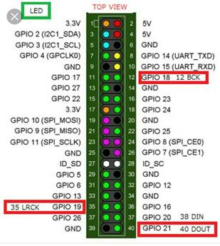

Garage door opener with video streaming
Setting up Apache, PHP and Motion
· Allow WinSCP to login as root to make file access easier:
sudo nano /etc/ssh/sshd_config
Remove the # and change:
PermitRootLogin yes
· After activating the camera in raspi-config, test the camera
raspistill -o cam.jpg
· Install Apache and PHP7.0
sudo apt-get install apache2 php7.0 libapache2-mod-php
· Install Motion and Dependencies
sudo apt-get install motion
sudo apt-get install libjpeg62
· Activate the official driver for the camera.
sudo modprobe bcm2835-v4l2
· Tell the Pi to activate the driver after any reboot
sudo nano /etc/modules
# at the end of the file, add this line :
bcm2835-v4l2
· Set Camera Server as a daemon (background process) and start it automatically
sudo nano /etc/default/motion
# in this file, search for start_motion_daemon and activate it
# start_motion_daemon=yes
· Copy the motion,conf file into /etc/motion/motion.conf
Notable changes from the default file:
Daemon = OFF to ON
webcam_localhost = ON to OFF
stream_localhost ON to OFF
webcontrol_port 8082
# careful! don't set the stream port the same as the web control port
· Now restart the motion service, start motion and see if you can see the webpage
sudo service motion restart
sudo motion
· At this point, if you cannot see the page, or if sudo motion fails, try and reinstall motion
sudo apt-get install motion
· Set motion permissions to log and pid folders
sudo chown -R root:motion /var/log
sudo chown -R root:motion /var/run
If motion isn’t starting properly when rebooting, add
sudo motion
to
sudo nano /etc/rc.local
GPIO Relay Setup
· Connect the relay trigger to pin 11 (GPIO 17) which is coded as pin 0
· Test the relay
gpio mode 0 out
gpio write 0 1
gpio write 0 0
Setting up the Webpage
· Set up /var/www as the default directory
sudo nano /etc/apache2/sites-available/000-default.conf
change /var/www/html to /var/www
· Remove html folder from /var/www
· Copy index.php into /var/www